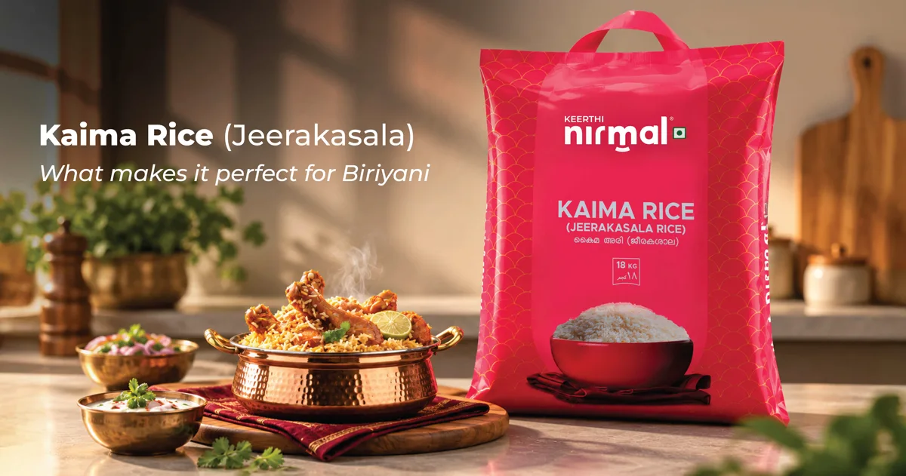

Kaima Jeerakasala Rice: What Makes It Perfect for Biryani?

A great biryani begins with the right rice. Discover why naturally aromatic Kaima Jeerakasala Rice is loved for authentic Malabar and Thalassery biryani.
A great biryani begins with the right rice. Discover why naturally aromatic Kaima Jeerakasala Rice is loved for authentic Malabar and Thalassery biryani.